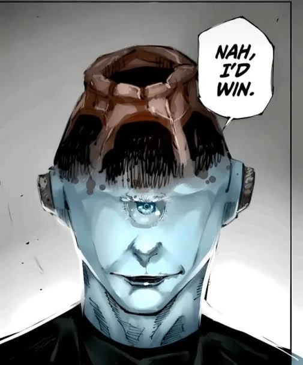

JoGoat
Throughout Heaven and Earth, I alone am the honored one!
Jogo (漏瑚 Jōgo?) is a god in the Jujutsu Kaisen series. The twin brother of gojo the strongest (can be observed from his name jogo inverted gojo). He was an unregistered special grade cursed spirit aligned with Mahito, Hanami, and Dagon. Jogo believed curses were the true humans and desired a world where his kind dominated the earth. Jogo was defined by his pride as a cursed spirit but he is cute . He was an intelligent being who was resolute in all his beliefs, willing to give his life so long as his goals were achieved in the long run.